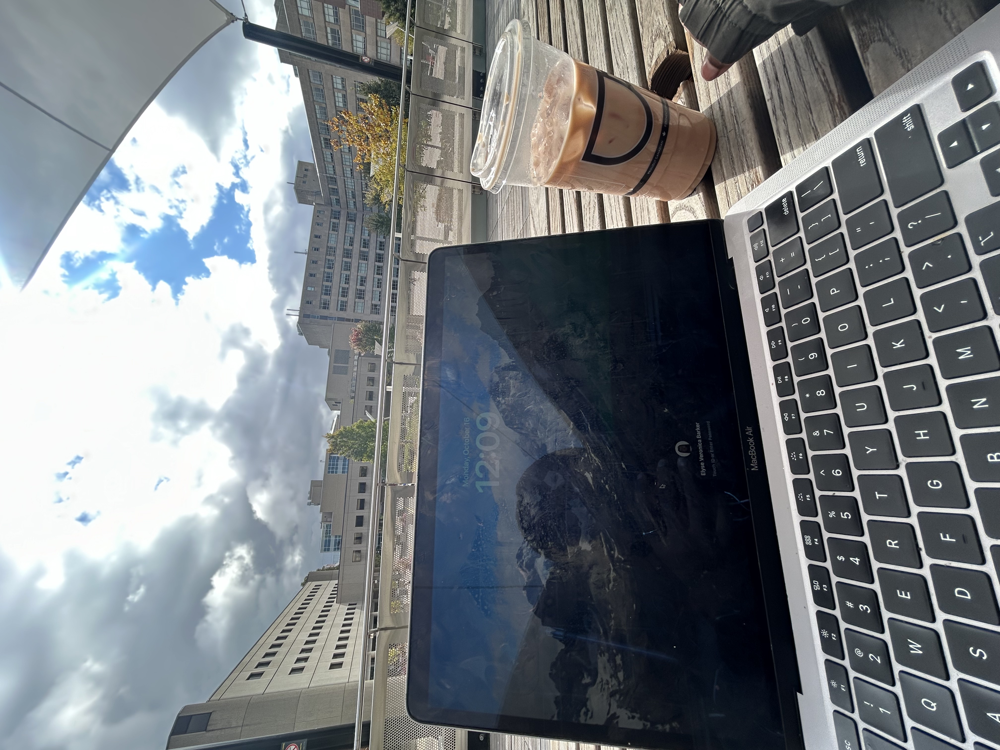

Welcome to my coding website. In this Website you will get an introduction to my social life in person, school life, and my social life online. Despite my life in Ottawa, i was born and raised in the city of Mississauga and competed as a dancer since the age of three. After having an amazing upbringing in the city, I decided it was time for a change and wanted to venture out for my post secondary education. After choosing the University of Ottawa, i can confidently say and show the many fundamentals to being a student in this city and the many challenges it comes with.
